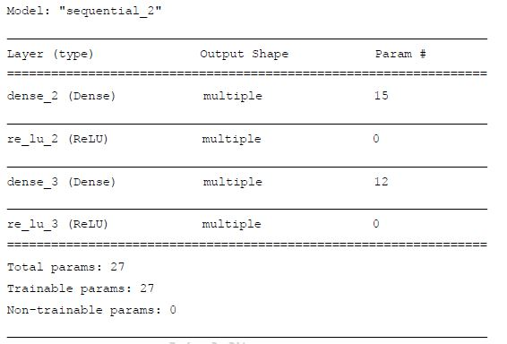
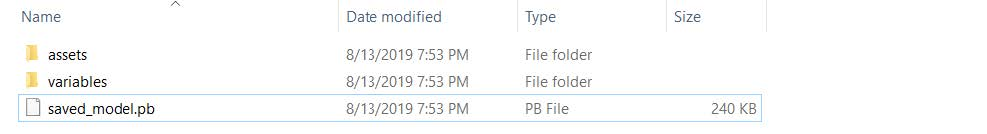

在TensorFlow 2 版本中，Keras 被正式确定为TensorFlow 的高层API 唯一接口，取代了TensorFlow 1 版本中自带的tf.layers 等高层接口。也就是说，现在只能使用Keras 的接口来完成TensorFlow层方式的模型搭建与训练。在TensorFlow 中，Keras 被实现在tf.keras 子模块中。对于使用TensorFlow 的开发者来说，tf.keras 可以理解为一个普通的子模块，与其他子模块，如tf.math，tf.data 等并没有什么差别。下文如无特别说明，Keras 均指代tf.keras 实现，而不是标准的Keras 实现。
常见功能模块
Keras 提供了一系列高层的神经网络类和函数，如常见数据集加载函数，网络层类，模型容器，损失函数类，优化器类，经典模型类等等。对于常见数据集，通过一行代码即可下载、管理、加载功能函数，这些数据集包括Boston 房价预测数据集，CIFAR 图片数据集，MNIST/FashionMNIST 手写数字图片数据集，IMDB 文本数据集等。
常见网络层类
对于常见的神经网络层，可以使用张量方式的底层接口函数来实现，这些接口函数一般在tf.nn 模块中。更常用地，对于常见的网络层，我们一般直接使用层方式来完成模型的搭建，在tf.keras.layers 命名空间(下文使用layers 指代tf.keras.layers)中提供了大量常见网络层的类接口，如全连接层，激活函数层，池化层，卷积层，循环神经网络层等等。对于这些网络层类，只需要在创建时指定网络层的相关参数，并调用__call__方法即可完成前向计算。在调用__call__方法时，Keras 会自动调用每个层的前向传播逻辑，这些逻辑一般实现在类的call 函数中。
我们以 Softmax 层为例，它既可以使用tf.nn.softmax 函数在前向传播逻辑中完成Softmax 运算，也可以通过layers.Softmax(axis)类搭建Softmax 网络层，其中axis 参数指定进行softmax 运算的维度。首先导入相关的子模块：
1 | import tensorflow as tf |
经过Softmax 网络层后，得到概率分布为：<tf.Tensor: id=2, shape=(3,), dtype=float32, numpy=array([0.6590012,
0.242433 , 0.0985659], dtype=float32)>
网络容器
对于常见的网络，需要手动调用每一层的类实例完成前向传播运算，当网络层数变得较深时，这一部分代码显得非常臃肿。可以通过Keras 提供的网络容器Sequential 将多个网络层封装成一个大网络模型，只需要调用网络模型的实例一次即可完成数据从第一层到最末层的顺序运算。
1 | # 导入Sequential 容器 |
Sequential 容器也可以通过add()方法继续追加新的网络层，实现动态创建网络的功能：
1 | layers_num = 2 # 堆叠2 次 |
上述代码通过指定任意的layers_num 参数即可创建对应层数的网络结构，在完成网络创建时，很多类并没有创建内部权值张量等成员变量，此时通过调用类的build 方法并指定输入大小，即可自动创建所有层的内部张量。通过summary()函数可以方便打印出网络结构和参数量：
模型装配、训练与测试
在训练网络时，一般的流程是通过前向计算获得网络的输出值，再通过损失函数计算网络误差，然后通过自动求导工具计算梯度并更新，同时间隔性地测试网络的性能。对于这种常用的训练逻辑，可以直接通过Keras 提供的模型装配与训练高层接口实现，简洁清晰。
模型装配
在 Keras 中，有2 个比较特殊的类：keras.Model 和keras.layers.Layer 类。其中Layer类是网络层的母类，定义了网络层的一些常见功能，如添加权值，管理权值列表等。Model 类是网络的母类，除了具有Layer 类的功能，还添加了保存、加载模型，训练与测试模型等便捷功能。Sequential 也是Model 的子类，因此具有Model 类的所有功能。
接下来介绍Model 及其子类的模型装配与训练功能。我们以Sequential 容器封装的网络为例，首先创建5 层的全连接网络用于MNIST 手写数字图片识别：
1 | #创建5层的全连接层网络 |
创建网络后，正常的流程是通过循环迭代数据集多遍，每次按批产生训练数据，前向计算，然后通过损失函数计算误差值，并反向传播自动计算梯度，更新网络参数。这一部分逻辑由于非常通用，在keras 中提供了compile()和fit()函数方便实现上述逻辑。首先通过compile 函数指定网络使用的优化器对象，损失函数，评价指标等：
1 | # 导入优化器，损失函数模块 |
我们在compile()函数中指定的优化器，损失函数等参数也是我们自行训练时需要使用的参数，并没有什么特别之处，只不过keras 将这部分常用逻辑实现了，提高开发效率。
模型训练
模型装配完成后，即可通过fit()函数送入待训练的数据和验证用的数据集：
1 | # 指定训练集为train_db，验证集为val_db,训练5 个epochs，每2个epoch 验证一次 |
其中train_db 为tf.data.Dataset 对象，也可以传入Numpy Array 类型的数据；epochs 指定训练迭代的epochs 数；validation_data 指定用于验证(测试)的数据集和验证的频率validation_freq。
运行上述代码即可实现网络的训练与验证的功能，fit 函数会返回训练过程的数据记录history，其中history.history 为字典对象，包含了训练过程中的loss，测量指标等记录项。
可以看到通过compile&fit 方式实现的代码非常简洁和高效，大大缩减了开发时间。但是因为接口非常高层，灵活性也降低了，是否使用需要用户自行判断。
模型测试
Model 基类除了可以便捷地完成网络的装配与训练、验证，还可以非常方便的预测和测试。关于验证和测试的区别，我们会在过拟合章节详细阐述，此处可以将验证和测试理解为模型评估的一种方式。
通过 Model.predict(x)方法即可完成模型的预测：
1 | # 加载一个batch 的测试数据 |
其中out 即为网络输出。
如果只是简单的测试模型的性能，可以通过Model.evaluate(db)即可循环测试完db 数据集上所有样本，并打印出性能指标：
network.evaluate(db_test) # 模型测试
模型保存
模型训练完成后，需要将模型保存到文件系统上，从而方便后续的模型测试与部署工作。实际上，在训练时间隔性地保存模型状态也是非常好的习惯，这一点对于训练大规模的网络尤其重要，一般大规模的网络需要训练数天乃至数周的时长，一旦训练过程被中断或者发生宕机等意外，之前训练的进度将全部丢失。如果能够间断的保存模型状态到文件系统，即使发生宕机等意外，也可以从最近一次的网络状态文件中恢复，从而避免浪费大量的训练时间。因此模型的保存与加载非常重要。
在 Keras 中，有三种常用的模型保存与加载方法。
张量方式
网络的状态主要体现在网络的结构以及网络层内部张量参数上，因此在拥有网络结构源文件的条件下，直接保存网络张量参数到文件上是最轻量级的一种方式。我们以MNIST手写数字图片识别模型为例，通过调用Model.save_weights(path)方法即可讲当前的网络参数保存到path 文件上：network.save_weights('weights.ckpt')
上述代码将network 模型保存到weights.ckpt 文件上，在需要的时候，只需要先创建好网络对象，然后调用网络对象的load_weights(path)方法即可将指定的模型文件中保存的张量数值写入到当前网络参数中去：
1 | # 保存模型参数到文件上 |
这种保存与加载网络的方式最为轻量级，文件中保存的仅仅是参数张量的数值，并没有其他额外的结构参数。但是它需要使用相同的网络结构才能够恢复网络状态，因此一般在拥有网络源文件的情况下使用。
网络方式
我们来介绍一种不需要网络源文件，仅仅需要模型参数文件即可恢复出网络模型的方式。通过Model.save(path)函数可以将模型的结构以及模型的参数保存到一个path 文件上，在不需要网络源文件的条件下，通过keras.models.load_model(path)即可恢复网络结构和网络参数。
我们首先将MNIST 手写数字图片识别模型保存到文件上，并且删除网络对象，再通过model.h5 文件即可恢复出网络的结构和状态：
1 | # 保存模型结构与模型参数到文件 |
可以看到，model.h5 文件除了保存了模型参数外，还保存了网络结构信息，不需要提前创建模型即可直接从文件中恢复出网络network 对象。
SavedModel 方式
TensorFlow 之所以能够被业界青睐，除了优秀的神经网络层API 支持之外，还得益于它强大的生态系统，包括移动端和网页端的支持。当需要将模型部署到其他平台时，采用TensorFlow 提出的SavedModel 方式更具有平台无关性。
通过 tf.keras.experimental.export_saved_model(network, path)即可将模型以SavedModel方式保存到path 目录中：
1 | # 保存模型结构与模型参数到文件 |
此时在文件系统model-savedmodel 目录上出现了如下网络文件：
用户无需关心文件的保存格式，只需要通过:
1 | # 从文件恢复网络结构与网络参数 |
即可恢复出网络结构和参数，方便各个平台能够无缝对接训练好的网络模型。
自定义类
尽管 Keras 提供了很多的常用网络层，但深度学习可以使用的网络层远远不止这些经典的网络层，对于需要创建自定义逻辑的网络层，可以通过自定义类来实现。在创建自定义网络层类时，需要继承自layers.Layer 基类；创建自定义的网络类，需要继承自keras.Model 基类，这样产生的自定义类才能够方便的利用Layer/Model 基类提供的参数管理功能，同时也能够与其他的标准网络层类交互使用。
自定义网络层
对于自定义的网络层，需要实现初始化__init__方法和前向传播逻辑__call__ 方法。我们以某个具体的自定义网络层为例，假设我们需要一个没有偏置的全连接层，即bias 为0，同时固定激活函数为ReLU 函数。尽管这可以通过标准的Dense 层创建，但我们还是实现这个自定义类。
1 | class MyDense(layers.Layer): |
自定义网络
在完成了我们自定义的全连接层类之后，我们基于上述的“无偏置的全连接层”来实现MNIST 手写数字图片模型的创建。
自定义的类可以和其他标准类一样，通过Sequential 容器方便地包裹成一个网络模型：
1 | network = Sequential([MyDense(784, 256), # 使用自定义的层 |
更普遍地，我们可以继承基类来实现任意逻辑的自定义网络类。下面我们来创建自定义网络类，首先创建并继承Model 基类，分布创建对应的网络层对象：
1 | class MyModel(keras.Model): |
这个例子可以直接使用第一种方式通过Sequential 容器包裹。但是由于Sequential 在前向传播是依次调用每个网络层的前向传播函数，灵活性一般，而自定义网络的前向逻辑可以任意定制，两者各有优缺点。